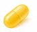

천연형(d-α-토코페롤)
생체 활성이 높아 같은 mg 에서 α-TE 환산값이 큼. 혼합 토코페롤 제품도 있음
- 함량 대비 활성을 우선할 때
- 혼합 토코페롤·토코트리에놀을 원할 때
성분 비교 · 제형·형태
비타민E 보충제는 대부분 α-토코페롤이며 'd-α'는 천연형, 'dl-α'는 합성형입니다. 합성형은 몸에 유지되는 비율이 낮아 같은 무게라도 mg α-TE 환산값이 작습니다. 천연형은 식물성 기름에서 얻고 토코트리에놀 등 다른 형태를 함께 담은 제품도 있습니다. 어느 형태든 상한은 하루 540mg α-TE 이고 항응고제 복용자는 고용량 전에 상담합니다.

비타민비타민 E 성분 사전효능·권장량·궁합·먹는 시간 — 형태와 관계없이 같은 기준 · 수집 제품 2,826건식약처 인정 기능성 표현을 기준으로 정리한 일반 건강 정보이며 의학적 조언이 아닙니다 · 최종 수정 2026-10-23
원료·제조·표기·먹는 법 같은 사실 관계만 비교합니다. 흡수율 수치·가격·효과의 우열은 적지 않으며, 기능성과 섭취량 기준은 형태와 관계없이 비타민 E 성분 사전과 같습니다.
| 항목 | 천연형(d-α-토코페롤) | 합성형(dl-α-토코페롤) | 표기 없음 |
|---|---|---|---|
| 유래 | 식물성 기름(대두·해바라기 등) | 화학 합성 | 표기 없음 |
| 생체 활성 | 높음 — 1mg ≈ 1.49IU | 낮음 — 1mg ≈ 1.1IU | — |
| 함께 든 형태 | γ·δ-토코페롤, 토코트리에놀 혼합 제품 있음 | α 단일 | — |
| 주의 | 상한 540mg α-TE, 항응고제 병용 시 출혈 경향 | 상한·항응고제 주의 동일 | 동일 |
| 라벨 표기 | 'd-α-토코페롤'·'천연 비타민E' | 'dl-α-토코페릴아세테이트' | '토코페롤'·'비타민E' |
| 수집 제품 수 (표기 기준) | 826건 | 24건 | 1,976건 |
비타민E 를 단독으로 챙긴다면 활성이 높은 천연형(d-α)이 기준이 되고, 종합비타민이나 오메가3 에 산화 방지 목적으로 든 소량은 합성형이라도 문제없습니다. 중요한 것은 여러 제품의 비타민E 를 합산해 상한 540mg α-TE 를 넘기지 않는 것과, 와파린·아스피린 등 항응고·항혈소판제 복용 중이면 고용량 전에 상담하는 것입니다.
생체 활성이 높아 같은 mg 에서 α-TE 환산값이 큼. 혼합 토코페롤 제품도 있음
저렴하고 안정적. 같은 mg 에서 활성이 낮아 표기 단위를 확인
'토코페롤' 로만 적힌 제품 — 제조사에 형태 확인
함량은 '비타민E ○mg α-TE(○%)' 로, 형태는 원재료명의 'd-α-토코페롤(천연)' 또는 'dl-α-토코페릴아세테이트(합성)' 표기로 확인합니다. 'IU' 표기 제품은 천연 0.67mg·합성 0.9mg 이 1IU 입니다.
식약처 품목신고 수집분(2021-04 이후)에서 제품명·원재료명 표기로 걸러낸 제품과 쇼핑몰 검색 결과입니다. 함량·형태·원료는 제품 라벨에서 꼭 확인하세요.
식물성 기름에서 얻은 천연 비타민E
수집 제품 826건 · 쇼핑몰 검색어: 천연 비타민E
표기로 걸러낸 신고 제품
석유화학 합성 비타민E — 종합비타민에 흔함
수집 제품 24건 · 쇼핑몰 검색어: 비타민E 영양제
표기로 걸러낸 신고 제품
원재료명에 d/dl 구분이 없는 제품
수집 제품 1,976건 · 쇼핑몰 검색어: 비타민E
표기로 걸러낸 신고 제품
제품명과 원재료명의 표기로 나눈 것이라 표기가 없는 제품은 '표기 없음' 묶음에 들어가고, 한 제품이 두 형태에 함께 셀 수 있습니다. 비타민 E 제품 전체 보기
같은 무게에서 몸에 유지되는 비율이 천연형이 높아 α-TE 환산값이 약 1.4배 가까이 크지만, 라벨이 이미 mg α-TE 로 환산돼 있다면 표시 함량 기준으로 비교하면 됩니다.
성인 충분섭취량은 하루 12mg α-TE 이고 상한은 540mg α-TE 입니다. 식사로도 섭취되므로 보충제는 소량이면 충분하고 고용량 장기 복용은 권하지 않습니다.
네. 산화 방지 목적으로 소량 들어가지만 별도 비타민E 제품과 합치면 상한에 가까워질 수 있습니다. 흡연자의 고용량 항산화제도 주의 대상입니다.